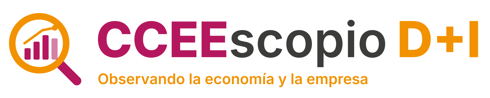

CCEEscopio D+I

CCEEscopio D+I (Docencia + Investigación) es el observatorio de indicadores económicos y empresariales de la Facultad de Ciencias Económicas y Empresariales de la Universidad de Granada. Reúne en un solo lugar 99 indicadores de la economía y la empresa (precios, empleo, actividad, empresa e innovación, turismo, sector público y mercados financieros, desigualdad y pobreza, sostenibilidad, población y economía internacional) para España, Andalucía y los países de la Unión Europea.
Observatorio de indicadores económicos y empresariales al servicio de la Docencia y la Investigación
👁️ visitas a CCEEscopio
Hoy en la economía
Cargando las noticias del día…
Las noticias más destacadas de las últimas 24 horas (las que publican más medios), seleccionadas cada mañana antes de las 9:00 a partir de Google Noticias. Los titulares enlazan a la noticia original y las etiquetas, a los indicadores de CCEEscopio con los que puedes comprobarlas. Más noticias en Noticias e indicadores; todas las cotizaciones en Bolsa al día.
CCEEscopio D+I en vídeo
¿Qué encontrarás?
🛒Precios e inflaciónIPCA general, alimentos, energía y servicios; precios de la vivienda.
👥Mercado laboralParo total, juvenil y femenino; tasa de empleo; paro por comunidades.
📈Actividad y coyunturaPIB, PIB per cápita, producción industrial, comercio y sentimiento económico.
✈️TurismoViajeros y pernoctaciones en hoteles, residentes y extranjeros, por regiones.
🏛️Sector público y mercadosDeuda y déficit públicos, bono a 10 años y tipo de cambio euro/dólar.
🌱Energía y sostenibilidadEnergías renovables, precio de la electricidad y emisiones.
🗺️Andalucía y regionesAndalucía frente al resto de comunidades autónomas y la UE.
🏆La Facultad en los rankingLa UGR en Economía, Empresa, Finanzas y Turismo.
Herramientas
🧮Calculadora de inflación¿Cuánto valen hoy los euros de otro año?
🪪Ficha de país o regiónLos indicadores clave de un territorio de un vistazo.
🔗Relaciona dos indicadoresCurva de Phillips, ley de Okun y otras relaciones entre países.
🔎Buscador de indicadoresLos 99 indicadores de CCEEscopio en una tabla.
Simuladores con datos reales
Toma decisiones y observa sus consecuencias. Cada simulador parte de los últimos datos publicados y enlaza con los indicadores de CCEEscopio. Ver todos los simuladores.
Para cada asignatura de la Facultad
En Docencia encontrarás, por grados (GADE, GECO, GFICO, GMIM y GTUR) y asignaturas, los indicadores recomendados y ejemplos de uso en clase.
Una herramienta para la docencia y la investigación
Docencia
- Datos reales y actualizados para las clases de Economía, Empresa, Métodos Cuantitativos, Econometría, Finanzas y Turismo, con indicadores y ejemplos por grados y asignaturas.
- Gráficos interactivos, calculadoras y un laboratorio de números índice para explicar conceptos.
- Juegos para clase con código QR y ranking en directo, ejercicios autocorregibles y un generador de exámenes.
Investigación
- Ideas para TFG y TFM con pregunta, hipótesis, datos y método, y un generador de gráficos que da la cita de la fuente.
- Descarga de los datos en CSV y de los gráficos en PNG o SVG, con su fuente y unidad, para artículos, tesis y proyectos.
- Análisis avanzados: mapa de calor de coyuntura, desigualdad con Gini y Theil, convergencia y regresión.
- La Facultad en los ranking y datos y fuentes (INE, Banco de España, IECA, Banco Mundial).
Datos siempre actualizados
Los indicadores se descargan en directo de la API de Eurostat cada vez que se abre una página, de modo que muestran siempre la última publicación oficial. Cada gráfico permite elegir los territorios que se comparan (España, Andalucía, comunidades autónomas y países de la UE), consultar los valores pasando el ratón y descargar los datos en CSV.
Novedades
Nuevo · Hoy en la economía nuevo: cada mañana, antes de las 9:00, la portada muestra las noticias económicas y empresariales más destacadas del día en España, Europa y el mundo, con los indicadores de CCEEscopio para comprobarlas, y las últimas cotizaciones de las bolsas.
Nuevo · Bolsa al día nuevo: el IBEX 35, el Euro Stoxx 50, Wall Street, Asia, el petróleo, el oro y las grandes empresas del IBEX, actualizados tres veces al día, con gráficos comparados en base 100, rentabilidades, volatilidad y retos que los relacionan con los indicadores económicos.
Nuevo · Simuladores nuevo: Gobernador del Banco Central, Gestiona una cartera, Llega a fin de mes y Gestiona tu destino turístico, con datos reales de Eurostat y de las bolsas.
Nuevo · Piedra, papel o tijera nuevo: juego para clase con código QR. El profesorado elige cuántas preguntas hay que superar; cada acierto da una partida contra la aplicación (si ganas, pasas de pregunta; si empatas, vuelves a jugar; si pierdes, contestas otra pregunta). Gana quien antes las supere todas.
Nuevo · Detecta el engaño nuevo: seis pares de gráficos con datos reales de Eurostat, uno honesto y otro engañoso. Descubre cuál engaña y qué truco usa: ejes cortados, fechas a medida, euros sin deflactar, bases de índice interesadas…
Nuevo · Plantilla de informe de coyuntura nuevo: genera en un clic el esqueleto de un informe con los últimos datos del país que elijas, descárgalo en Word y evalúalo con la rúbrica incluida.
Actualizado · La Facultad en los ranking: añadida la edición 2024 del Ranking de Shanghái por materias y completadas las series con la web oficial de ShanghaiRanking.
Nuevo · Tres juegos más para clase con código QR nuevo: Bingo de indicadores (tacha los países que cumplen cada condición), Ordena la malla (de mayor a menor) y ¿Quién es quién? (adivina el país por sus indicadores).
Nuevo · Mapa de calor de coyuntura nuevo: todos los países de la UE (o las comunidades autónomas) y sus principales indicadores de un vistazo, coloreados según su posición relativa.
Nuevo · Laboratorio de números índice nuevo: cambio de base, tasas de variación, enlace de series, deflactación y los índices de Laspeyres, Paasche y Fisher, con datos reales y ejercicios autocorregibles.
Nuevo · Ideas para tu TFG o TFM nuevo: un generador de temas de investigación con pregunta, hipótesis, datos, método y estructura, para todas las titulaciones de la Facultad.
Rankings en gráficos: la posición de la UGR en los rankings por disciplinas, ahora también en gráficos.
Nuevo · Memoria de datos nuevo: juego para clase con código QR. Durante unos segundos se proyecta una malla 3 × 3 con el dato de un indicador en nueve países o comunidades autónomas; después se ocultan y, desde el móvil, cada acierto descubre una casilla y cada fallo obliga a empezar de nuevo. Gana quien antes desbloquee las nueve.
Nuevo · Precios de productos nuevo: la gasolina y el gasóleo cada semana desde 2005, con la parte que son impuestos y comparados con el IPC (también en euros de hoy); el precio de la luz y el gas de los hogares; y cuánto costaban el pan, la leche, el aceite o el café en cualquier fecha.
Nuevo · Concurso «¿Cuánto costaba?» nuevo: los estudiantes ven un producto con su precio actual y, desde el móvil, adivinan cuánto costaba en una fecha del pasado. Gana quien más se acerque.
Nuevo · Mapas animados nuevo: en todos los paneles temáticos, el mapa se puede animar para ver cómo cambia cada indicador a lo largo del tiempo, con la misma escala de colores en todos los periodos. Puedes pararlo en cualquier momento o seguir eligiendo un periodo concreto.
Nuevo · Concurso en clase nuevo: los estudiantes escanean un QR, responden preguntas con datos reales desde el móvil y el ranking aparece en directo en la pantalla.
Nuevo · Guarda cualquier gráfico nuevo: todos los gráficos tienen botones para descargarlos en PNG de alta resolución o en SVG, con su leyenda y la fuente, listos para un trabajo, un TFG o un TFM.
Nuevo · Calculadoras nuevo: un menú con todas las calculadoras y dos nuevas, la regresión con análisis de supuestos y el análisis cuantitativo de datos, que funcionan con las series de CCEEscopio o con tus propios datos.
Nuevo · Pirámides de población nuevo: de los países europeos, las comunidades autónomas y las provincias, con animación desde el año 2000.
Nuevo · ¿Qué explica cada indicador? nuevo: descompón la inflación (alimentos, energía, vivienda, transporte, servicios…), el crecimiento del PIB, la cuenta corriente, la población y el turismo, y descubre qué componentes explican cada subida.
Nuevo · Noticias e indicadores nuevo: noticias económicas de los últimos días con el reto de comprobarlas con los indicadores de CCEEscopio.
Nuevo · 🎮 Juegos con datos nuevo: el dato del día, ¿más alto o más bajo?, adivina el país, ¿qué pasó aquí?, ordena los países y un modo aula para competir en clase. Y además, predice el próximo dato.
Nuevo · Para el profesorado nuevo: generador de exámenes y fichas de práctica con versiones, soluciones y exportación a PRADO, exámenes de Técnicas Cuantitativas III con soluciones, y modo presentación para proyectar en clase.
Nuevo · Análisis nuevo: datos extremos e inusuales, ciclo económico y semáforo de coyuntura, convergencia σ y β, qué indicador se adelanta, previsión sencilla, calculadora de desigualdad y simulador de política fiscal.
Para estudiar y enseñar: ejercicios autocorregibles con los últimos datos, generador de gráficos para el TFG con la cita en APA y glosario de indicadores.
Herramientas: simulador de hipotecas y préstamos con el euríbor real, conversor de unidades y comparador de comunidades autónomas.
Paneles: mercados al día, turismo en Andalucía, demografía empresarial y consumo y confianza.
Al día: boletín de coyuntura, datos recientes y calendario y bases de datos de la Biblioteca.
Tu opinión cuenta
¿Te resulta útil CCEEscopio? Responde a la encuesta de satisfacción: es anónima y se contesta en menos de un minuto. También puedes abrirla desde el botón ⭐ ¿Nos valoras? que aparece en todas las páginas.
Quién lo gestiona
CCEEscopio es una iniciativa de la Facultad de Ciencias Económicas y Empresariales de la Universidad de Granada, gestionada por el Vicedecanato de Investigación, Transferencia y Posgrado. Si quieres proponer nuevos indicadores, colaborar o comunicar un error, escríbenos a investiga_ccee@ugr.es.